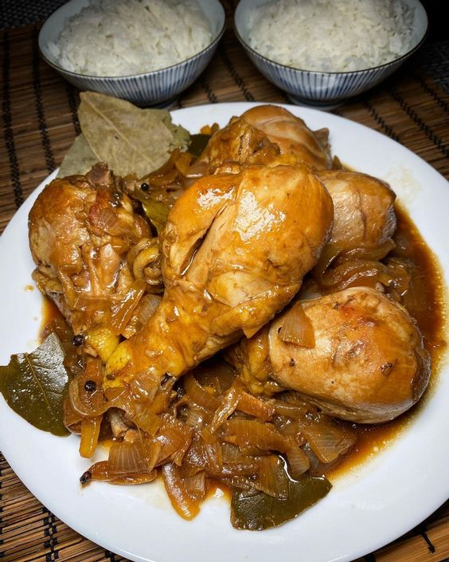

Adobo

Description
Filipino Chicken Adobo is the national dish of the Philippines and may well become your new
favourite Asian chicken dish! Just a few everyday ingredients I can practically guarantee you
already have, its an effortless recipe that yields juicy, tender chicken coated in a sweet
savoury glaze with little pops of heat from peppercorns.
Ingredients
- boneless skinless chicken thighs (cannot substitute with breast, need the fat to transform sauce into a glaze)
- soy sauce all purpose or light soy sauce. NOT dark soy sauce (bottle will be labelled as such if its dark soy sauce)
- white vinegar just everyday, plain white vinegar. Sub with any clear vinegar, including rice wine, apple cider, sherry vinegar
- onion and garlic
- peppercorns or coarse cracked pepper
- sugar brown best, white ok
- bay leaves fresh or dried, not the end of the world if you dont have; and
- greeen onions optional garnish
Instructions
- Combine Chicken and Marinade ingredients in a bowl. Marinate for at least 20 minutes, or up to overnight.
- Heat 1 tbsp oil in a skillet over high heat. Remove chicken from marinade (reserve marinade) and place in the pan. Sear both sides until browned about 1 minute on each side. Do not cook the chicken all the way through.
- Remove chicken skillet and set aside.
- Heat the remaining oil in skillet. Add garlic and onion, cook 1 1/2 minutes.
- Add the reserved marinade, water, sugar and black pepper. Bring it to a simmer then turn heat down to medium high. Simmer 5 minutes.
- Add chicken smooth side down. Simmer uncovered for 20 to 25 minutes (no need to stir), turning chicken at around 15 minutes, until the sauce reduces down to a thick jam-like syrup.
- If the sauce isn't thick enough, remove chicken onto a plate and let the sauce simmer by itself - it will thicken much quicker - then return chicken to the skillet to coat in the glaze.
- Coat chicken in glaze then serve over rice. Pictured in post as a healthy dinner plate (415 calories) with cauliflower rice and Ginger Smashed Cucumbers.
Back to Main Page